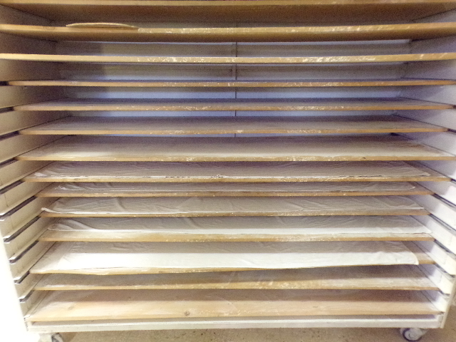

Blog de Noticias
Explora y sumérgete en el mundo de nuestra panadería y nuestros productos horneados para descubrir la esencia de la tradición y el arte culinario que nos define.
Explora el mundo del pan desde adentro: sumérgete en las profundidades de una panadería y descubre los secretos detrás de cada mordisco. Aprende las recetas más deliciosas para hacer tu propio pan en casa y conviértete en un maestro panadero desde la comodidad de tu cocina.
-
Todo lo que hay que saber sobre la masa madre
La masa madre es un ingrediente fundamental en la panificación,
Leer más
con una historia que se remonta a milenios atrás. -
La Maquinaria Esencial en la Panadería: Tecnología
que Transforma el Arte de Hornear
En el corazón de cada delicioso pan recién horneado, hay una combinación perfecta de tradición y tecnología. Las panaderías no solo dependen de la habilidad y creatividad de sus panaderos, sino también...
Leer más
ocultar
TODO LO QUE NECESITAS SABER SOBRE LA MASA MADRE
Descubre todo lo esencial sobre la masa madre en esta completa guía del pan de masa madre.
Aprovechando el conocimiento de los expertos en masa madre de Puratos, te llevaremos a través del fascinante viaje de su origen, exploraremos sus numerosos beneficios para la salud y te proporcionaremos los secretos para elaborar masa madre de la más alta calidad.
Prepárate para adentrarte en el mundo del pan de masa madre como nunca antes lo has hecho.
¿QUÉ ES Y QUÉ APORTA LA MASA MADRE?
La masa madre es un cultivo natural de levaduras y bacterias que está compuesto a base de harina y agua, que no contiene ningún fermento añadido más allá de la harina y el agua, siendo la propia harina la que da como resultado una amplia variedad de levaduras y bacterias que provocan la fermentación de la masa de forma espontánea dando lugar a la masa madre.
Los panes elaborados a partir de masa madre o que incluyen masa madre de panadería entre los ingredientes. Aporta un sabor y aroma característicos al pan, además de mejorar su textura y conservación. Además, la fermentación natural de la masa madre aumenta la digestibilidad del pan y la disponibilidad de nutrientes, lo que lo hace más saludable y fácil de digerir en comparación con otros tipos de pan.
Algunas de las ventajas más destacadas de la masa madre son las siguientes:
- Mejora la digestión.
Este tipo de elaboración propicia que las bacterias en la levadura tengan una misión importante, predigerir el almidón de los granos. Lo que quiere decir que tardaremos en hacer la digestión y en procesarlo. - Se conserva de manera natural.
Los panes elaborados con masa madre duran más tiempo en buenas condiciones. Siempre que los tengamos envueltos en un trapo de algodón, podemos disfrutarlos durante 3-4 días - Contiene vitaminas y minerales.
La composición de la masa madre es tan compleja que alberga muchos nutrientes. Entre ellos se encuentran las vitaminas B1 a B6, B12, folato, tiamina, niacina, riboflavina, vitamina E, hierro, magnesio, calcio, fósforo, zinc y potasio. Además, también tiene un increíble balance de proteínas y ácidos grasos. - Mejora la textura y sabor.
La masa madre mejora la textura y sabor del pan debido a la levadura natural y las bacterias que intervienen en su proceso de elaboración y la fermentación ayuda a que haya un alto contenido de fibra.
¿DE DONDE PROCEDE LA MASA MADRE?
EL ANTIGUO EGIPTO
De acuerdo con las evidencias más antiguas, la historia de la masa madre se remonta al Antiguo Egipto. Hace más de 5,000 años, los egipcios, reconocidos por su avanzada agricultura y tecnología, fueron pioneros en el uso de la masa madre en la elaboración del pan.
Conocida como "masa agria" en ese entonces, preparaban esta mezcla fermentada mezclando harina con agua, permitiendo que las levaduras silvestres presentes llevaran a cabo el proceso de fermentación. Este método no solo producía panes con un sabor excepcional, sino que también los hacía más fáciles de digerir en comparación con el pan no fermentado.
Es importante resaltar que los panes de masa madre son notablemente más amigables para la digestión que los panes convencionales, un conocimiento que, asombrosamente, ya se tenía incluso en el Antiguo Egipto. Sin embargo, con el transcurso del tiempo, esta sabiduría parece haberse perdido en cierta medida.
LOS ROMANOS
Los romanos dejaron un legado significativo en la historia de la masa madre y del pan en general. Su dominio de técnicas avanzadas de panificación, como el uso de hornos de piedra y el amasado mecánico, los posicionó como líderes en la producción de pan de alta calidad en la antigüedad.
El pan se volvió cada vez más popular en la antigua Roma, lo que llevó al desarrollo de panes especiales, como el "panis quadratus" (pan con cuatro líneas), que se elaboraba con masa madre y se utilizaba en rituales religiosos en lugares como Pompeya. La arqueóloga Farrel Monaco ha logrado acercarse al sabor y la textura de este pan gracias a los ingredientes carbonizados preservados por la erupción del Vesubio. Hoy en día, el "panis quadratus" se exhibe en el Museo Arqueológico Nacional italiano, junto con otros restos fascinantes de la antigüedad.
EDAD MEDIA Y LAS PRIMERAS PANADERÍAS
Durante la Edad Media, la panadería vivió un renacimiento en Europa. A medida que las ciudades crecían, comenzaron a surgir las primeras panaderías comerciales, lo que significó un cambio notable en la producción de pan.
Con la aparición de panaderías comerciales, la masa madre se convirtió en un elemento esencial para la producción de pan a gran escala. A medida que la panadería se expandía por toda Europa, cada región desarrolló sus propias técnicas y cepas de levadura, lo que resultó en una gran variedad de panes con sabores y texturas únicos.
Este periodo también vio una mayor especialización en la panadería. Los panaderos comenzaron a crear panes específicos para satisfacer las preferencias locales y las demandas del mercado. Esto llevó a una rica diversidad de panes de masa madre en toda Europa, y el legado de estas tradiciones aún perdura en las recetas regionales actuales.
LA REVOLUCIÓN CIENTÍFICA
En el siglo XIX, durante la Revolución Científica.
Louis Pasteur demostró que las levaduras eran las responsables de la fermentación en la masa madre. Este descubrimiento permitió comprender mejor los procesos de fermentación.
A medida que los científicos descubrían los secretos de la fermentación, desarrollaron métodos para cultivar levaduras de forma controlada. Esto posibilitó la producción masiva de levadura comercial, que se convirtió en un ingrediente principal en muchas panaderías.
LA REVOLUCIÓN INDUSTRIAL
Con la Revolución Industrial llegaron cambios radicales al mundo de la panadería, transformándola hasta llegar al pan como lo conocemos hoy en día. Se implementaron métodos de producción en masa y se comenzó a utilizar levaduras comerciales, con el fin de aumentar la eficiencia y la capacidad de producción de pan. Sin embargo, este avance tuvo un costo significativo: la pérdida de la calidad y autenticidad del producto. La tradición de la masa madre, con sus tiempos de fermentación más largos y su proceso natural, quedó en segundo plano.
EL RESURGIMIENTO
En las últimas décadas, la panadería de masa madre ha recuperado su relevancia. Este resurgimiento se ha visto impulsado por una creciente apreciación por la comida natural y la artesanía en general, no solo en la cocina. Tanto los panaderos caseros como las panaderías artesanales han redescubierto el arte de elaborar pan con masa madre, explorando recetas, ingredientes y técnicas que, aunque no son realmente nuevas, habían quedado en el olvido. La masa madre se ha convertido en un símbolo de autenticidad y calidad en el mundo de la panadería.
¿ES MEJOR EL PAN CON MASA MADRE?
Desde un punto de vista nutricional, el pan de masa madre es superior al pan de harina integral o de grano entero. Además, contribuye positivamente a la salud de la microbiota intestinal. Sin embargo, no presenta diferencias significativas en términos de saciedad o metabolismo de la glucosa en comparación con el pan normal.
En cuanto a la conservación, la masa madre es una fuente esencial de lactobacilos, que desempeñan un papel favorable en la conservación del pan. Esto hace que el pan de masa madre se deteriore más lentamente que el pan convencional, permitiendo que se conserve durante más tiempo, incluso en la nevera.
COMO HACER TU PROPIA MASA MADRE
Crear tu propia masa madre en casa es un proceso sencillo pero requiere paciencia y dedicación. A continuación, te proporciono una receta detallada para hacer masa madre desde cero:
Ingredientes
- Harina integral o harina de centeno (la integral contiene más microorganismos y nutrientes)
- Agua filtrada o embotellada (sin cloro)
Materiales
- Un frasco grande de vidrio o plástico con tapa (sin sellado hermético)
- Una cuchara de madera o silicona
- Un paño de cocina limpio o una tapa sin sellar
- Una balanza de cocina (opcional pero recomendada para precisión)
Primera Alimentación
- Después de 24 horas, es posible que veas algunas burbujas pequeñas. Esto es una señal de que la fermentación ha comenzado.
- Desecha la mitad de la mezcla (aproximadamente 100 gramos).
- Añade 100 gramos de harina integral y 100 gramos de agua a la mezcla restante.
- Remueve bien, cubre nuevamente y deja reposar a temperatura ambiente durante otras 24 horas.
Alimentación Diaria
- Cada 24 horas, repite el proceso de descartar la mitad de la mezcla y alimentarla con 100 gramos de harina integral y 100 gramos de agua.
- A medida que pasen los días, deberías notar más burbujas y un aumento en el volumen de la mezcla.
- Si la mezcla comienza a oler agria (un buen signo), estás en el buen camino.
Estabilización
- Continúa alimentando la masa madre una vez al día hasta que veas que dobla su volumen en unas 4-6 horas después de alimentarla y tiene un aroma agradablemente agrio.
- En este punto, tu masa madre está lista para usar.
Mantenimiento
- Alimentación Regular: Si vas a hornear pan regularmente, puedes mantener la masa madre a temperatura ambiente y alimentarla diariamente.
- Refrigeración: Si horneas con menos frecuencia, guarda la masa madre en el refrigerador y aliméntala una vez a la semana. Cuando necesites usarla, sácala del refrigerador y aliméntala durante 1-2 días a temperatura ambiente para activarla.
Notas Adicionales
- Harina Blanca: Una vez que la masa madre esté establecida, puedes empezar a alimentarla con harina blanca si prefieres. La harina integral es ideal para iniciar la masa madre debido a su mayor contenido de nutrientes y microorganismos.
- Consistencia: La masa madre debe tener una consistencia de masa espesa. Si está demasiado líquida, ajusta la cantidad de harina o agua.
- Ajustes de Cantidades: Puedes ajustar las cantidades de alimentación según el volumen de tu frasco y la cantidad de masa madre que necesites.
Siguiendo estos pasos, podrás crear y mantener una masa madre saludable y activa para tus panes artesanales. ¡Buena suerte y disfruta del proceso de hornear con masa madre!
ocultar
MAQUINARIA ESENCIAL EN LA PANADERIA
En el corazón de cada delicioso pan recién horneado, hay una combinación perfecta de tradición y tecnología. Las panaderías no solo dependen de la habilidad y creatividad de sus panaderos, sino también de maquinaria que garantiza eficiencia, calidad y consistencia. En este artículo, exploraremos algunas de las máquinas de nuestra panadería, y cómo estas herramientas han revolucionado el arte de hacer pan.
Amasadoras
Las amasadoras son probablemente las máquinas más críticas en una panadería. Estas potentes herramientas mezclan ingredientes como harina, agua, levadura y sal para crear una masa homogénea y elástica, se han convertido en un elemento imprescindible para amasar las masas y automatizar el aparatoso y cansado proceso de mezclar los ingredientes para elaborar el pan. Las amasadoras permiten atender el trabajo de manera más eficaz, rápida y económica.

Las amasadoras llevan más de un siglo haciendo la vida más fácil en el obrador. En 1908 Herbert Johnston (Estados Unidos) tuvo la idea de diseñar la primera batidora amasadora comercial, al ver como un panadero hacia manualmente la mezcla de la masa para elaborar el pan. Como comprobó que era un trabajo duro y laboriosos decidió fabricar una maquinaria que aliviase esa labor.
Pesadora de masa de pan
Las máquinas que pesan y dividen la masa de pan, también conocidas como divisoras de masa o pesadoras-divisoras, son herramientas esenciales en las panaderías modernas. Estas máquinas automatizan el proceso de dividir grandes cantidades de masa en porciones uniformes, mejorando la eficiencia y la consistencia de los productos horneados.
Aunque las pesadoras-divisoras de masa automatizan el proceso de pesar y dividir la masa, no eliminan la necesidad del trabajo manual. La intervención del panadero sigue siendo crucial, especialmente en la fase de moldeado final de la masa.
Después de que la máquina ha pesado y dividido la masa, cada porción aún necesita ser amasada a mano para obtener la forma y textura deseadas. Este proceso artesanal es esencial para garantizar la calidad y la singularidad de cada producto.
Antes de la introducción de las máquinas que pesan y dividen el pan, las balanzas de platos eran una herramienta fundamental en las panaderías para asegurar la precisión y la uniformidad en la producción de pan. Aquí se detalla cómo se utilizaban estas balanzas en el proceso tradicional de panadería.
Camaras de reposo
Las cámaras de reposo, también conocidas como cámaras de fermentación, son equipos fundamentales en las panaderías, diseñados para proporcionar las condiciones ideales de temperatura y humedad necesarias para la fermentación de la masa. A continuación, se proporciona una descripción más detallada sobre su funcionamiento, tipos, características y beneficios.
El objetivo principal de las cámaras de reposo es crear un ambiente controlado que favorezca la actividad de las levaduras y las enzimas en la masa. La fermentación es un proceso bioquímico donde los azúcares presentes en la masa se convierten en dióxido de carbono y alcohol bajo la acción de las levaduras, lo que provoca que la masa aumente de volumen y desarrolle sabor y textura.
Formadora de masa
Después de un reposo adecuado en la cámara de reposo, la masa está lista para dar el siguiente paso en su transformación hacia deliciosas barras de pan. Es aquí donde entra en juego la formadora de masa en barras, una pieza clave en el proceso de producción de pan en la panadería.
La formadora de masa es una máquina utilizada en panaderías para dar forma a la masa de pan en barras u otras formas específicas. Este dispositivo es esencial en la producción de pan en masa, ya que agiliza el proceso de formación de las piezas de pan, garantizando uniformidad y consistencia en cada producto horneado.
Pero esta no elimina por completo el trabajo manual en la panadería. Después de que las barras de pan han sido formadas, todavía es necesario colocarlas en carros para que reposen y fermenten antes de ser horneadas. Este paso es crucial para garantizar la calidad y la textura adecuada del pan final.

Carros de panaderia
Los carros en una panadería son dispositivos esenciales para el transporte y el almacenamiento de productos horneados, así como para facilitar el flujo de trabajo en el ambiente de trabajo. Estos carros vienen en una variedad de tamaños, formas y capacidades para adaptarse a las necesidades específicas de la panadería
Hornos de leña
Los hornos de leña en una panadería aportan un encanto y una calidad distintiva al proceso de horneado del pan. Estos hornos, que utilizan la combustión de leña como fuente de calor, han sido utilizados durante siglos y siguen siendo apreciados por su capacidad para impartir un sabor y una textura únicos a los productos horneados.
Comentarios